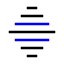

Zirvium is a from-scratch x86-64 kernel and operating system that implements the MOSIX standard. It replaces legacy paths with a simplified filesystem hierarchy, unifies device management under a single /zirv namespace, and is written entirely in C11 and x86-64 assembly.
The ecosystem spans five projects: the kernel itself, a freestanding C library, an init system, an English-like shell, and a utilities collection. Together they form a complete, functional operating system capable of booting on bare metal and under QEMU.
| Ecosystem & Projects | Detailed overview of all Zirvium components |
| System Architecture | Kernel design, memory mgmt, syscalls, drivers |
| Download & Build | Source code, build instructions, QEMU quick-start |
| User Documentation | Building, running, shell usage, FAQ |
| Developer Documentation | Kernel internals, driver dev, porting guide |